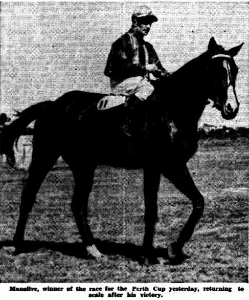
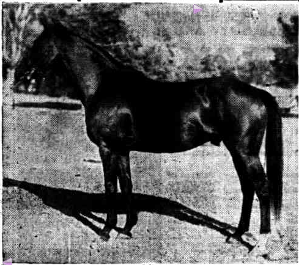

5 Sept 1936
COASTAL RACING CANNING CLUB'S MEETING GRAND VIZIER'S HANDICAP PLATE TO MANOLIVE Perth. Western Argus (Kalgoorlie, WA : 1916 - 1938) Tuesday 8 September 1936 - page 21
The Canning Club's meeting was held at Goodwood Sept 5 1936. Following are details of the results!- CANNING PLATE Six furlongs:- J. E. Hay's b h Manolive, by Manfred-Sister Olive, 4 yrs., 7.12 (Ryding).......... 1 J. McGowan's ch m Lady Wold, a, 7.7 (Archer)..................................................... 2 B. Daly's b g Syncopate, a., S.0 (Tulloh) ................................................................ 3 Betting: 7 to 4 agst. Romany Faith, 4 to 1 Manolive, Aga King, 6 to 1 Syncopate, Lady Wold, 8 to 1 Tremney, 10 to 1 Tongnahuric, 20 to 1. others. Totalisator.-~S.O.: Dividend: £1 12/. Place: Dividends, 11/, 14/, 12/ Doubles: Ena Treat---Manolive, £4 10/; Ena Treat-Lady Wold, £3 8S; Ena Treat-Syncopate, £10 4/. Aga King lost three or four lengths at barrier rise. Lady Wold quickly shot to the front, and on settling down, led by two lengths from Manolive and Syncopate, then Romany Faith, Jolly Fair and Tremney. There was little change at half-way except that Aga King had improved his position and Septima was last. Lady Wold led into the straight from Manolive, Romany Faith, Syncopate and Jolly Fair, but Manolive finished best to win by a neck from Lady Wold and Syncopate half a length away third. Jolly Fair was fourth, then Tremney and Romany Faith, with Septima last. Time, 1 min. 13.4s. (Winner trained by owner.) (Race started at 3.17.)
2 Jan 1937
THE PERTH CUP. FAVOURITE FAILS BADLY. MANOLIVE WINS. BIG CROWD APPLAUDS VICTORY. The West Australian Saturday 2 January 1937 - Page 9

Manolive won the Perth Cup in record time at the Perth race course yesterday. It was the third day of the Western Australian Turf Club's Christmas racing carnival. Panto was second and Mariner third. The favourite, Poesia, showed unimpressive form and at no stage appeared to have a chance of winning. He finished well back in the ruck. Pleasant weather, an excellent attendance and the success of four favourites made the day a notable one for racegoers. The carnival will conclude today, when the main event will be the State Cup, a race for horses bred in Western Australia. To an accompaniment of hearty cheering from a large crowd, Manolive, a four-year-old bay horse, returned to the weighing enclosure at the Perth racecourse yesterday, victor in the Perth Cup, the greatest turf event in the year in this State. Although the favourite had failed and a large amount of backers' money had found a resting place in bookmakers' bags, the winning horse and its rider, H. Whitbread, received a warm ovation in recognition of a fine perform ance. Although not highly fancied, Manolive was supported well in the betting ring and on the totalisator. There were several thousand very wise people at the Perth racecourse yesterday. Some had gone to the course wise before the event (as it so happened). Others had gained their wisdom the second after the winner had passed the post in the Cup race. Months of preparation, of anxiety, of hopes and fears culminated in an excited babble which soon changed to a dull roar and then to an exultant shout. The smack of whips could be heard for a moment; an ever changing cloud of colour moved swiftly around the course, above the rails; crouching figures were tense above galloping animals; a group of horses thundered down the straight in pursuit of another, but their pursuit was vain and another Perth Cup passed into racing history. At the course there were all the elements of an excellent day of sport. Green lawns stretched wide under a blue sky; a warm sun was tempered by a mild breeze. There were friends to greet, for it was New-year's Day, and pretty dresses to admire, even to envy. No mishap or hitch in the arrangements occurred to mar the pleasure of the day, and the crowd was one of the biggest that has at tended a Perth Cup for several years. All the shrewd judges of the thorough bred were at the course yesterday and who is not such a judge at Cup time the devotees of the pin-method, the soothsayers, the dreamers of winners, the students of form, the plungers who backed "hunches," and, of course, those who really did know something about race horses. From the saddling paddock to the betting ring to the totalisator, from the totalisator to the stands they went, back and forth, throughout the afternoon sketching a fantastic and colourful pattern on the green lawns. Fate was kind to the punters, for four favourites were successful during the afternoon, but the bookmakers did not appear to be unduly perturbed, for the betting on the Cup was free and spirited and those who took a risk on "long shots" (and there were many who did) were left lamenting. A murmur of astonishment arose when the names of the jockeys for the Cup were posted. It was seen that Brown, the Eastern States rider, who was to have ridden Red Ray, which had been heavily backed, did not have the mount, but the change had no noticeable effect on the betting and it was soon forgotten in the excitement of the parade, the preliminaries and the tense pause before the start. Then the field was away with Yaringa, the second favourite, setting a merry pace. Thousands of eyes sought the orange and green of Poesia's jockey, but the favourite was not prominent in the running. A red jacket Panto galloped steadily in the front group of horses, but an other, Manolive, hard held, but moving boldly, lay cunningly behind the leaders; an ever-present danger. Positions changed. Horses, strongly ridden, challenged and were beaten off, and so the field swept around the bend out of the back stretch. A powerful bay, in a few strides, moved out from the mob of horses, and Manolive galloped to the straight entrance well in the lead. Panto, well nursed by its rider, who rode a Cup winner while still a lad, made a move, but Whitbread, a veteran of the saddle, with victory in the Perth Cup within his grasp after 25 years of riding, was not to be caught. He rode the leader hard and Manolive, responding as would a machine to the touch of a skilful craftsman, steadied for an instant, galloped strongly on and passed the post two lengths ahead of the tired but courageous Panto.
20 Feb 1937
SPORTING NEWSKalgoorlie Miner Saturday 20 February 1937 - Page 9
Manolive, winner of the last Perth Cup, may not be seen again in this State as his lessee-trainer, Mr. J. E. Hay, has made arrangements for the horse-to be shipped to Melbourne by the Kanimbla on March 25 (states a telegram from Perth). He is to be entered for the Caulfield and Melbourne Cups and other races in the spring. Mr. Hay secured a renewal of the lease from the owner, Mr. A. A. Spencer, who purchased Manolive as a yearling. Mr. Spencer will leave for Melbourne next week where he will spend an extended holiday. He will attend the yearling sales and will probably purchase two young steers, he will also attend important Victorian race meetings in the autumn. When on a visit to Melbourne three years ago Mr. Spencer purchased eight yearlings and one of these was subsequently named Manolive, who cost 140 guineas.
19 Oct 1937
SPORTING NEWSKalgoorlie Miner Tuesday 19 October 1937 - Page 9
Rumours that Manolive, a popular fancy for the Caulfield Cup, had been sold, to go to India, were denied last night by the Horse's owner, Mr. A. A. Spencer, of Mordialloc (states a telegram received from Melbourne last night). Manolive's lease to Mr. J. E. Hay, of Perth, does not expire until November 18 and Mr. Spencer said that no plans, for Manolive's future would be made until after that date.
26 Oct 1938
CUP GOSSIP. ROYAL CHIEF PRAISED. The Withdrawal of Footmark.The West Australian Wednesday 26 October 1938 - Page 8
MELBOURNE, Oct. 25. The publication of final acceptances for the Melbourne Cup, which will be run at Flemington on Tuesday of next week, has stimulated interest in the big race and already Melbourne is beginning to respond to the appeal of the spring carnival. Visitors are arriving from all parts of Australia. There were no surprise withdrawals at final acceptance today and with 23 horses remaining in the Cup the field will not be as large as that of last year, when The Trump brilliantly defeated 27 others. The Trump will at tempt to repeat that win this year, but on this occasion he faces a different task for he has been handicapped up to his best form and with 9.4 must give weight to all other horses in the field. Footmark was among the withdrawals and the only survivor of the various West Australian-owned horses to be entered for the Cup is Manolive. The Perth Cup winner is raced by the West Australian, Mr. A. A. Spencer, who is particularly keen to see his colours carried in the Melbourne Cup and for that reason decided to accept for Manolive, whose bad failure in the Moonee Valley Cup last Saturday does not speak well for his chance at Flemington next Tuesday. "WHICH SHALL IT BE?" Following is the field for to-day's Melbourne Cup, showing saddle cloth numbers, barrier positions, weights, and riders "Royal Chief" is the Answer of most Melbourne Trainers. Queensland Times (Ipswich) (Qld. : 1909 - 1954) Tuesday 1 November 1938 - Page 9 1 .. THE TRUMP (19) .. 9.4 ...... (A. Reed) 2 .. ROYAL CHIEF (15) .. 9.3 ...... (E. Bartle) 3 .. ALLUNGA (5) .. 9.1 ...... (H. Bostian) 4 .. SPEAR CHIEF (2) .. 9.0 ...... (M. McCarten) 5 .. CATALOGUE (17) .. 8.4 ...... (F. Shean) 6 .. MANOLIVE (20) .. 8.4 ...... (R. Morley) 7 .. QUEEN OF SONG (23) .. 8.3 ...... (H. Mornement) 8 .. ST.CONSTANT (6) .. 8.3 ...... (W. Cook) 9 .. L'AIGLON (10) .. 8.2 ..... (D. Munro) 10 .. YOUNG CRUSADER (8) .. 8.1 ...... (E. McMenamin) 11 .. MARAUDER (21) .. 8.0 ...... (J. O'Sullivan) 12 .. SILENUS (12) .. 8.0 ...... (H. Skidmore) 13 .. SIR REGENT (1) .. 8.0.. ... (R. Marsden) 14 .. BOURBON (7) .. 7.12 ..... (R. Parsons) 15 .. ORTELLE'S STAR (9) .. 7.11.... .. (A. Bresley) 16 .. GAY KNIGHT (16) .. 7.10...... (A. Dewhurst) 17 .. AITCHENGEE (14) .. 7.9 ...... (W. Elliot) 18 .. NUFFIELD (11) .. 7.7 ...... (H. Badger) 19 .. PLECTRUM (22) .. 7.7 ..... (R. Bones) 20 .. RESPII|ATOR (4) .. 7.3 .. .. Unlikely starter. 21 .. KINGDOM (3) .. 7.2 ..... (A. Knox) 22 .. BACHELOR KING (13) .. 6.12 ...... (J. Duncan) 23 .. SON OF AUROUS (18) .. 6.12 ...... (R. Medhurst) Watch actual footage of the pre-race parade to get a glimpse of Manolive being paraded. You will see him walk across the frame in the background between the timemarks of 0:22 and 0:24 .. with number 6 on his saddle cloth! 1938 Melbourne Cup YouTube video 1938 Melbourne Cup Placings
7 Nov 1938
A PLEASED OWNER. Faith in Perth Cup Winner.The West Australian Monday 7 November 1938 - Page 7
MELBOURNE, Nov. 6. One of the most pleased men in Melbourne after the racing yesterday is Mr. A. A. Spencer, formerly of Perth and now a resident of Mordialloc and the owner of Manolive, winner of the V.R.C. Final Handicap yesterday in a time that broke Phar Lap's record. Mr. Spencer bought Manolive as a yearling, and although the horse was raced on lease when he won the Perth Cup Mr. Spencer has been the actual owner throughout. He has had the horse in Victoria almost two years now and his colours of white jacket, red diamond and blue cap were carried to victory by Manolive yesterday in one of the most noteworthy occasions in his turf career. Mr. Spencer said today that Manolive would run in the Williamstown Cup on Saturday, for which race the horse is liable to a rehandicap. After that other plans will be made for Manolive and it is not unlikely that he will meet his engagement in the Port Adelaide Cup. Mr. Spencer thought of entering Manolive for the Perth Cup, but this is now unlikely. Mr. Spencer himself will return to Perth at Christmas. Manolive is a bigger and more powerful horse than he was when in Perth and A. R. Jamieson, who had a good deal of success in Adelaide with Benoni, has him exceptionally fit. Manolive, although a six-year-old stallion, is a home of easy temperament and in addition he has given no trouble with his legs. At one time it was not thought that he would race again because of a bow tendon and he had to be given a long spell. Both forelegs were fired and he has made a remarkable recovery. He has stood up to solid work and he showed his fitness weeks ago by making a track record in a gallop at Epsom. He failed in the Moonee Valley Cup through pulling early and in the Caulfield Cup because of a rough passage. But Mr. Spencer never lost faith in him, and the horse, who, if he had secured the run, would have scored in the Veteran Stakes on Thursday, made amends yesterday in no uncertain style. He was sleepy and yawning when in his stall yesterday but belied his appearance when in the race. At Mordialloc he is kept fresh with swimming, his stables not being far from the beach.
14 Nov 1938
MANOLIVE SETS COURSE RECORDThe Mercury (Hobart, Tas. : 1860 - 1954) Monday 14 November 1938 - Page 13
MELBOURNE, November 12. MANOLIVE, the West Australian owned performer, set the seal on his career by scoring a decisive win in the 50th AJC Willamstown Cup today before a large crowd. The gallant son of Manfred scored an unequivocal victory. He had enough pace to take up a good position early, and dashing to the front when the field settled down, he quickly established a handy lead. El Señorita, The Rift, Young Crusader, Prince Quex, Mutable, Queen of Song, and Kingdom were his nearest attendants passing the mile post. Manolive was commencing to string the field out at the half mile post, where El Señorita, The Riff, and Prince Quex were prominent. Approaching the turn Manolive singled out, and the only other horse with a chance was Young Idea. Kingdom was weakening. Then Queen of Song flashed into the picture, but Manolive showed no sign of relinquishing his grip on the race, and amidst cheers went on to a decisive win by five lengths. Young Idea fought on surprisingly well to defeat Queen of Song for second place. The Riff, who followed the New Zealand mare, was always prominent, and her showing was distinctly encouraging. Kingdom was by no means disgraced. Ortelle's Star, who evidently is feeling the strain of her arduous campaigning, was never dangerous. Manolive, who is trained by A. Jamieson for Mr. A. Spencer, of West Australia, covered the distance in 2m.28.5s. He clipped 2.25s. off the course record made by Yarramba six years ago. Bred by Mr. Leslie Aldridge, Manolive is by the dual Derby winner, Manfred, from the Melbourne Cup winner, Sister Olive, and is a full brother to the disappointing Fredman, who carried the colours of a Launceston owner. F. Shean rode his usual fine race on Manolive, and the Queensland jockey has enjoyed a great run of success in important races this Spring, having won the Epsom Handicap on King's Head, Caulfield Cup on Buzalong, and the Melbourne Cup on Catalogue.
16 Nov 1938
MANOLIVE BREAKS THREE RECORDS IN TRACK DASHThe Daily News (Perth, WA : 1882 - 1950) Wednesday 16 November 1938 - Page 1
MELBOURNE, Wednesday. Record breaking West Australian owned Manolive smashed three more records in one gallop at Epsom today. Ridden by outstanding jockey F. Shean he ran a mile and a quarter in the phenomenal time of 2.8 to clip 3.25 sec. off Aitchengee's ten furlongs track record. Not only did he shatter that record but over the last nine furlongs he timed 1:54, cutting 2.25 sec. off his own track record. And he registered 1.41.5 for the last mile to lower Textile's long-standing record by a second. Shean kept a firm hold of Manolive for the first furlong, which took 14sec, but when he found the horse was anxious to work he loosened the rein rather than pull him about and allowed him to stride along at his own pace. Stretching out in style reminiscent of his recent Flemington and Williamstown wins, he recorded 49.25 for his last half-mile and 36.5 for the last three. The only time Shean asked anything of Manolive was about half a furlong from the finish, when he gave the reins a shake and the horse responded well to finish brilliantly over the last two in 24. NEVER BETTER Despite the fact that Manolive has had much strenuous racing throughout the spring he looks remarkably well. His owner, Mr. A. A. Spencer, was present to see the trial, and both he and trainer A. Jamieson agreed afterwards that Manolive was in better form than ever. Winner of the 1936 Perth Cup, Manolive has been in brilliant form recently. Last Saturday he clipped 2.25 sec. off the Williamstown record to win the one and a half mile cup. The previous Saturday, at Flemington, he broke Phar Lap's last remaining record — one and a quarter miles timing 2.2.
19 Nov 1938
MANOLIVE ONCE AGAIN - Adds £1,750 To His Stake WinningsBrilliant W.A. Galloper Lands Eclipse StakesMirror (Perth, WA : 1921 - 1956) Saturday 19 November 1938 - Page 6
CAULPIELD, Today. Stakes won by horses ridden by the Queensland jockey, Shean, during the carnival now amount to over £20,000. He added another £1750 today when Manolive bolted away with the Eclipse Stakes. The further they went, the further Manolive increased his lead, and it was no race from the straight entrance. So brilliantly is he racing that punters wadded him down to odds-on today — and the price was right. Continuing his amazing run of successes, Manolive scored his third consecutive win when he won the Eclipse Stakes by three find a half lengths, after leading throughout. His rider, Fred Shean has. created racing history by winning the Caulfield Gup, Melbourne, Cup, Williamstown Cup and Eclipse Stakes in one season
19 Nov 1938
Manolive's Owner Values His Lucky PennyMirror (Perth, WA : 1921 - 1956) Saturday 19 November 1938 - Page 23
It was in a city restaurant the other afternoon. A tall square-shouldered, nower-fully-built man leant back in his chair, delved into his trouser pocket to pay for his meal. He was handing the proprietress a number of small coins, when he suddenly leapt for a penny included amonq them and placed it affectionately back in his vest pocket. He grinned towards a man sitting at the next table. 'That was a narrow squeak — almost parted with my lucky penny. Found it a fortnight ago, and I haven't done a thing wrong since.' He put on his hat and left the shop. 'Know him?' one chap asked another. 'That's Arthur Spencer. His dad and he own Manolive and they've won £2400 stake money in the last fortnight. Can you blame him for not parting with his lucky penny?'
19 Nov 1938
SECRET IN HIS TONGUENot tied downThe Argus (Melbourne, Vic. : 1848 - 1957) Saturday 19 November 1938 - Page 14
Many reasons have been advanced for the recent phenomenal successes of Manolive. The latest is that the secret lies in his tongue. When after his win in the Tullamarine Handicap at Moonee Valley on September 24 Manolive failed in four races including the Melbourne Cup his owner, Mr A A Spencer did not wish to start the horse again! But his trainer A R Jamieson maintained that the horse would thrive on racing and how true has his view proved. The Manfred horse's successes began after his good showing in the Veteran Stakes, the race for which Jamieson had wished to set the horse in preference to running him in the Melbourne Cup. Acting on the advice of Mr Les Aldridge of Kismet Park Stud Sunbury where Manfred sire of Manolive is standing an experiment was tried in the Melbourne Cup in which the horse's tongue was not tied down with greenhide as previously, but was kept in place by a special type of bit. The bit has been used ever since! Manolive did not run up to expectations in the Cup and he dead-heated for second place in the Veteran Stakes. Thus began a successful run in which an Australasian record and a course record I have been shattered. This week a track record was broken when the horse galloped 10 furlongs in 2 8 next to the rails at Epsom on Wednesday morning. While it may be too much to expect him to break Burlesque's record for 11 furlongs in the Eclipse Stakes to day, it is more than probable that the Manfred horse will complete the hat-trick as he has thrived on his racing and is very fit.
21 Nov 1938
£7,537 FOR 140 GUINEAS - GREAT RETURN BY MANOLIVEOwner Did Not BetThe Argus (Melbourne, Vic. : 1848 - 1957) Saturday 21 November 1938 - Page 18
Bought as a yearling for 140 guineas, Manolive has won £7,537 in stakes. Of that amount £4,150 has been won in the last two and a half weeks, but on Saturday Mr. A. A. Spencer, owner of the horse, did not benefit apart from the prize of £1,750 when Manolive won the Eclipse Stakes at Caulfield. "I did not have a penny on him," said Mr. Spencer after the race. "I am only a small bettor at anytime, and although I had a few pounds on him at Williamstown, the price to-day was no good to me. The stake was all I wanted." Although Mr. Spencer was content with the stake, the majority of backers regarded Manolive in the Eclipse Stakes as money for nothing. Opening at even money, Manolive eased for a few seconds to 6 to 4 in parts of the ring, but that was rushed. One wager of £600 to £400 was written, and Manolive quickly firmed again to even money. But just before the start that was rushed, and bookmakers were demanding odds at barrier-rise. "If he pulls at all early in the race let him go to the front," were the instructions given to Manolive's rider, P. Shean, by the trainer of the horse, A. R. Jamieson, who had great faith in the horse's ability to win from end to end, and did not wish to run a risk that Manolive would knock himself about by fighting for his head in the early stages. Shean, too, realised that risk, and as soon as the barrier rose he allowed Manolive to take the lead. But in going over to the rails beginning the turn out of the straight Shean allowed Manolive to cross the horses on the inside rather sharply. No actual interference was caused, and Shean escaped with a reprimand from the stewards. Manolive soon settled down in front on the rails, and he went along the side of the course very comfortably in advance of Phildean, Othello, Beau Roi, and Prince Quex. Othello, however, took a long time to settle down. He was anxious to go much faster than his rider desired, and he threw his head about in an attempt to go at his top. He was still one of the bunch that followed Manolive at the six furlongs post, and he was obtaining a great run on the inside, but he was defeated just before the home turn was reached. At that stage Manolive was not very far in front of Beau Hoi, and Kingdom was moving up smartly on the outside, but Manolive went away again a little later, and he entered the straight clear of Beau Roi, with Kingdom, Footmark, and Young Idea nearest of the others. Footmark had made up his ground gradually, and momentarily about a furlong from home he seemed likely to trouble Manolive. But once again Footmark failed to maintain his run, and Manolive went on to score by three and a half lengths from Kingdom, who struggled on well to defeat Young Idea by half a length. Manolive had broken records at his two previous starts, but he failed by a second and a quarter to equal Burlesque's Caulfield and Australasian record of 2.15 for the mile and three furlongs. Burlesque made his record in winning the Eclipse Stakes - then known as the Consolation Stakes in 1934. But the 2.16 recorded by Manolive was easily the next best time for the race.
23 Nov 1938
MANOLIVE COST ONLY £250The Daily News (Perth, WA : 1882 - 1950) Wednesday 23 November 1938 - Page 10
Manolive, most talked of horse in Australia apart from Ajax, was one of a batch of eight horses Mr. A. A Spencer bought in Melbourne in 1934. The batch cost £100.0 to land in Western Australia, Manolive's purchase representing about a quarter of the price. In two weeks he won about £4000 in stakes, including £1750 in last Saturday's Eclipse Stakes. Manolive's owner conducted a machinery business in Wellington street for about 20 years up to last July. Though always a lover of horses he did not own one until he purchased the batch in Melbourne. Apart from Manolive, those he bought were Beauville, Star Lomond (destroyed as a result of injuries received in a race early in his career), Manatope, Devinny, Miss Valve, Sir Fils and Syntony. While some won races their performances were not outstanding. On the other hand, Manolive has won £7537 for twelve wins. OWNER'S CHOICE Mr. Spencer selected the horse him self in Melbourne. Racing is now his hobby. He is about 75, and very energetic for his years. Manolive, who was lame when he arrived, was first raced here by the Belmont trainer Tom Garvey, in conjunction with Mr. Spencer. When he won the Perth Cup, while held on lease by J. Hay, Manolive was prepared on the beaches at Fremantle, and his work consisted of long, solid work and swimming. His present trainer, A. R. Jamieson, gained many successes with Benoni, who won about £4000 in a come-back, to the turf in Adelaide years ago after being in retirement. Manolive's brilliant run of recent weeks should heighten his value as a stud proposition when he is finished with racing.
24 Nov 1938
SHEAN TO HAVE MOUNTManolive Will Run in Port Adelaide Cup
The Courier-Mail (Brisbane, Qld. : 1933 - 1954) Thursday 24 November 1938 - Page 10
MELBOURNE, Wednesday — Manolive is to run in the Port Adelaide Cup on December 28. His owner, Mr. A. A. Spencer, and his trainer, A. R. Jamieson, decided this to-night. Jamieson will leave with Manolive in a week or two. Manolive has been rehandicapped twice for the Port Adelaide Cup, and has 9.9, but as he won the Eclipse brilliantly with 101b. less, he should not be troubled by the rise. The Cup is worth £1700. P. Shean. who won the V.R.C. Final Handicap, Williamstown Cup, and Eclipse Stakes on Manolive, has promised to ride the horse in the Cup.
25 Nov 1938
Sporting Notes
Kalgoorlie Miner (WA : 1895 - 1950) Friday 25 November 1938 - Page 8
Fred Shean, who has been associated witih Manolive in recent victories, does not subscribe to the view that the Manfred horse would trouble Ajax. Shean said :— 'People have suggested to me that, in his present form, Manolive would be a match for Ajax at a mile and a quarter or a mile and a half. All I can say is, I only wish I were on, Ajax in any such race.' Shean added that Manolive was a good, horse, but he also knew of a few others who would have won the Final Handicap at Flemington, the Williainstown Cup, and then the Eclipse Stakes just as easily. Shean said that he had been offered the mount on Manolive in the Port Adelaide Cup, but, although he had given no definite answer, he would probably make the trip to Adelaide at Christmas. Mr. A. A. Spencer, owner of Man olive, is not a heavy bettor, and he did not invest one penny on Man olive in the Eclipse Stakes. "I do not wish to become a millionaire in a day out of racing" he said. "My greatest pleasure is in knowing that I own a horse able to beat the others as easily as Manolive has beaten them in the last three starts."
26 Nov 1938
Manolive Not For AdelaideThe Courier-Mail (Brisbane, Qld. : 1933 - 1954) Saturday 26 November 1938 - Page 12
MELBOURNE, November 24. Manolive will not be a starter in the Port Adelaide Cup, because his owner, Mr. A. A. Spencer, fears that the hard tracks in Adelaide may I have an adverse effect on the horse. Manolive will be rested for a few weeks before being put into work for the autumn meetings in Melbourne. One of Manolive's important tests in the autumn will be the King's Cup, in which he will meet Ajax at Flemington
19 Jan 1939
RACING DAY BY DAYPlans ror Manolive
The Advertiser (Adelaide, SA : 1931 - 1954) Thursday 19 January 1939 - Page 13
All that is needed for Manolive to run in the Tooronga Handicap at Caulfield on Saturday is the sanction of the owner, Mr. A. A. Spencer, who is in Western Australia. His trainer, Arthur Jamieson, is anxious to run the gelding. He considers that Manolive needs racing, and is waiting on word from the owner, says the 'Sporting Globe.' Whether Manolive runs in the Tooronga Handicap or not, he is to race either at Williamstown on January 30 or Mentone on February 4. Then will come his first serious test. He will tackle Ajax in the C. F. Orr Stakes at Williamstown on February 11. Manolive will not be tried in distance races till after the Orr Stakes. This preparation is leading him up to the King's Cup at the V.R.C. Autumn meeting, and the Sydney Cup early in April. No rider has been engaged for Manolive, but it is likely that F. Munro. who rides him in most of his work, will be in charge until F. Shean arrives later on.
13 Feb 1939
NOTES AND CHATManolive v. Ajax.
The West Australian (Perth, WA : 1879 - 1954) Monday 13 February 1939 - Page 6
When Mr. A. A, Spencer, owner of Manolive, was back in Perth for a short period at Christmas he mentioned that his horse would be given at least one opportunity of clashing with the mighty Ajax in the autumn. Mr. Spencer's plans regarding Manolive's programme then depended on the progress the horse would make in training, but after Manolive's fine performance of Saturday his proud owner should have no misgivings in tackling Ajax. Ajax's name has become a byword in turf circles and he has been considered unbeatable up to a mile and a half, but the performances which were recorded by Manolive last spring, and his winning run of Saturday, prompt the question as to whether Ajax is in vincible. Ajax has set a terrific and demoralising pace in some of his mile and a quarter races, but has not yet covered that journey in 2.2. Manolive, however, has run the distance in that astonishing time, a feat that he performed last spring. On Saturday Manolive won the Orr Stakes in good time, his second start for the autumn. He won in typical fashion, making his own pace, and seeing that he is fit already he looks the probable winner, at this stage, of the King's Cup. This mile and a half race would provide him with a great chance of beating Ajax. The latter has not yet raced this autumn, and over the long journey of the King's Cup, a distance which would be more to the liking of Manolive, he may be beaten. If the pair do meet in the King's Cup the pace will be hot from the start, for both Ajax and Manolive are free-goers and do their best when dashing along in front. Even if Ajax holds the lead in the early and middle stages Manolive should not be far behind when they enter the long Flemington straight.
17 Feb 1939
TOMORROW'S RACING. THE GOODWOOD PROGRAMME.Manolive v. Ajax at Caulfield.
The West Australian (Perth, WA : 1879 - 1954) Friday 17 February 1939 - Page 8
Racegoers at Goodwood tomorrow, when the Canning Park club will hold its meeting, will await the result of the clash between Manolive and Ajax at Caulfield with as much interest as they will follow the proceedings at the local course. Manolive, the winner of a Perth Cup in record time and of many other races here and later on the winner of rich prizes in Victoria, has fed the imaginations of West Australians. His varying fortunes, and his sudden rise to top-class provide a romance of the turf and now he is being spoken of in the same breath as Ajax, the recognised weight-for-age champion of Australia. Bought for 140 guineas as a yearling, Manolive has won more than £8,000 in prize money. There was a time in Melbourne when he was in obscurity and it was thought that a bowed tendon would prevent his racing again; and that he has recovered completely and now stands up to gruelling track gallops, some of which result in the smashing of track records, is one of the most noteworthy features of his surprising career. There is a confidence in a champion's reputation which dies hard and it is difficult to believe that Ajax will be beaten by this new challenger who has emerged from the racing of late last spring, and who has won further laurels since resuming his turf activities in the autumn. Ajax and Manolive will meet for the first time tomorrow, and although there will be other runners against them in the St. George Stakes at Caulfield it is safe to say that thousands in all parts of Australia regard the weight-for-age event as a match between two. Form will favour Manolive for he has already had two outings and has scored a win this autumn, while Ajax has yet to race this year, but the champion's reputation will stand to him and he will be favourite to win his 15th race in succession. If he wins he will be well on his way to reaching the Australasian record for consecutive successes, which is 19 and which is held jointly by Gloaming and Desert Gold, and he will equal Carbine's total of 15 wins on end. Ajax has never been defeated "first up."
20 Feb 1939
MANOLIVE'S LOOSE PLATE SPOILS STAKESThe Argus (Melbourne, Vic. : 1848 - 1957) Monday 20 February 1939 - Page 18
Almost tearing off his off fore shoe, Manolive faltered when racing with Ajax along the back of the course in the St. George Stakes, and what promised to be a great race was spoiled. Ajax went on to win fairly easily from Young Idea. F Shean who rode Manolive told A. B. Jamieson trainer of the horse that Manolive stopped so suddenly that he must have broken down but Jamieson was greatly relieved to find that the only trouble was with the plate which had become loose and had twisted slightly on the outside. Undoubtedly that was the reason for Manolives inability to reveal his best form but it was fortunate that the twist was on the outside of the plate otherwise Manolive might have cut himself. A decision whether Manolove will run in the Australian Cup will be made early this week! Ajax brought his run of wins to 15 and his earnings to £25,175 when he passed the post a length and a quarter in front of Young Idea in the St George Stakes. He is 23rd in the list of Australasian stake winners but before the end of the autumn he should improve that position. Reports that Ajax was not as good as he was in the spring had been heard last week but Ajax soon disproved them. He began as smart as usual and although actually headed by Manolive for a stride or two between the seven and six furlongs posts, he moved away from that horse near the five. Rounding the home turn he was clear of Young Idea whose rider (W Cox) waited on the rails in the hope that Ajax would move away from the inside as he has done so often at Caulfield. Ajax however made the home turn well and Cox took Young Idea to the outside. Not until inside the last furlong did Ajax begin to veer out and Cox switched Young Idea back to the inside but although that horse fought on well he had no chance with Ajax. Spear Chief who was third for a long way lost a little ground approaching the home turn but he ran on again to gain third place a length and three quarters behind Young Idea. The form was very satisfactory and suggested a win for Spear Chief before he returns to Sydney. Ortelles Star gained admirers for the Australian Cup by finishing a fair fourth in front of the Cup favourite Bourbon. Both will be seen to greater advantage over longer distances.
11 Mar 1939
MANOLIVE TO RETIRE?The Daily News (Perth, WA : 1882 - 1950) Saturday 11 March 1939 - Page 31
MELBOURNE, Saturday. Mr. A. Spencer had long intended to use Manolive for stud duty in Western Australia, and as the stallion broke down in the Australian Cup today his retirement from the turf is almost certain. Mr. Spencer purchased some yearling fillies at the sales a few days ago and later on they will be mated with Manolive.
15 Sept 1939
NOTES AND CHATManolive to Race Again.
The West Australian (Perth, WA : 1879 - 1954) Friday 15 September 1939 - Page 12
Mr. N. Willows, who won a race at the Goldfields carnival with Devinny, has received a letter from his uncle, Mr. A. A. Spencer, the owner of Manolive. Mr. Spencer, who is now residing at Mordialloc, Victoria, says that Manolive has given indications of standing another preparation, and he will be raced after Christmas. Mr. Spencer has a batch of nice fillies in work, who will be raced before being retired to the stud, where they will be served by Manolive.
16 Dec 1939
MANOLIVE RETURNSThe Argus (Melbourne, Vic. : 1848 - 1957) Saturday 16 December 1939 - Page 3S
The Manfred horse Manolive, who was retired to the stud following his breakdown in the Australian Cup this year, is to be raced again. Manolive has completed a light stud season, and he moved very freely in steady exercise over two circuits of the sand track at Epsom yesterday morning. His owner, Mr. A. A. Spencer, is making a steady recovery from a serious illness.
17 Jan 1940
Manolive For StudThe Advertiser (Adelaide, SA : 1931 - 1954) Wednesday 17 January 1940 - Page 14
Plans to race Manolive again have been abandoned. Manolive has shown no signs or a recurrence of the tendon trouble that caused his retirement last year, but his owner, Mr. A. A. Spencer, considers that it would be risky to set him a serious preparation. Manolive will be reserved for the stud. He did stud duty at Mr. Spencer's Manolive Stud Farm in the spring.

Manolive For StudSunday Times (Perth, WA : 1902 - 1954) Sunday 23 July 1944 - Page 11 Here is a picture of Manolive, a beautiful bay who stood at Elouera Stud, Bassendean. Manolive, was by Manfred, winner of the Caulfield Cup, from Sister Olive, winner of the Melbourne Cup, was foaled in 1932 and won, among many other races, the Perth Cup of 1937, the Williamstown Cup, C. B. LloydStakes Final Handicap, and Tullamarine Handicap. In all, Manolive won over £8000 in stakes. Incidentally his sire won over £28,000. while Sister Olive annexed over £8000.
8 Apr 1940
OUTSTANDING 2-YEAR-OLDSLeases Successfully
The Daily News (Perth, WA : 1882 - 1950) Monday 8 April 1940 - Page 10
The colours of Mr. A. A. Spencer, owner of Manolive, have not been carried to victory many times in this State, although a number of horses he has owned have been good winners here. Mr. Spencer secured Manolive and several other horses as yearlines. He leased them to various trainers in whose colours they won — Manolive scoring in the Perth Cup in Mr. E. Hay's colours. Mr. Spencer has again purchased a number of yearlings and leased them to Perth trainers. H. W Campbell is preparing one: J. Pratley recently broke in a filly by Night Patrol purchased by Mr. Spencer at the recent Belmont sale, and S. Bowler is handling a Windbaeoolt for him.
12 Aug 1943
Sporting NotesKalgoorlie Miner (WA : 1895 - 1950) Thursday 12 August 1943 - Page 4
Mr. A. A. Spencer, who died in Perth on Tuesday, was well known in turf circles. At different times he speculated largely at yearling sales in the Eastern States and 'the youngsters' he purchased were brought to this State and mostly leased out. Included among the many importations he made was Manolive, who won the Perth Cup while on lease to J. E. Hay. Subsequently Manolive was raced in Melbourne in the late Mr. Spencer's nomination and won several important events and established an Australasian time record for a journey of a mile and a quarter which was, later equalled by another West Australian-owned horse, Remarc. The late Mr. Spencer was 78 years of age.